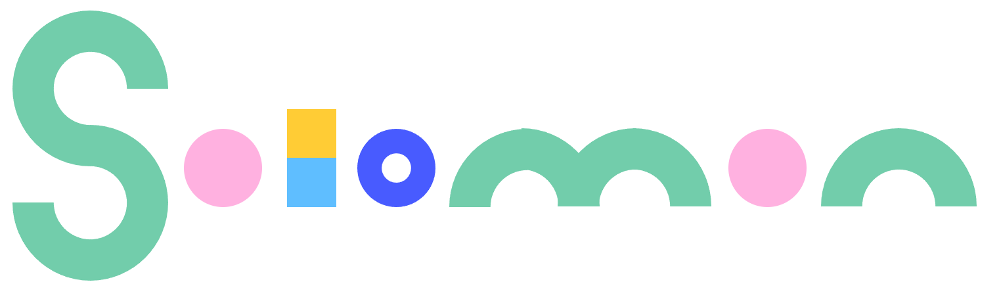

Spellbook
Spellbook is the best way to type. Traditional stenography relies on phonetic spellings and a stenograph. The average typist is more familiar with spelling words the way they're spelled.
So I started conjuring.
Sitting at around 3300 spellings, this is a dictionary for and extension of a word chording program in the Windows scripting language AutoHotKey.
Initially devised to support my work as a transcriptionist, Spellbook is now an ongoing diary.
Guiboard
The Guiboard is a MIDI controller/instrument designed to mimic the layout of notes on a fretboard. As a typist and guitarist, I decided the most immediate way to interface with MIDI would be not-a-piano. Pianos complicate chord/scale patterns by changing their shapes across keys. A fretboard or isomorphic keyboard allows for constant visual intervals.